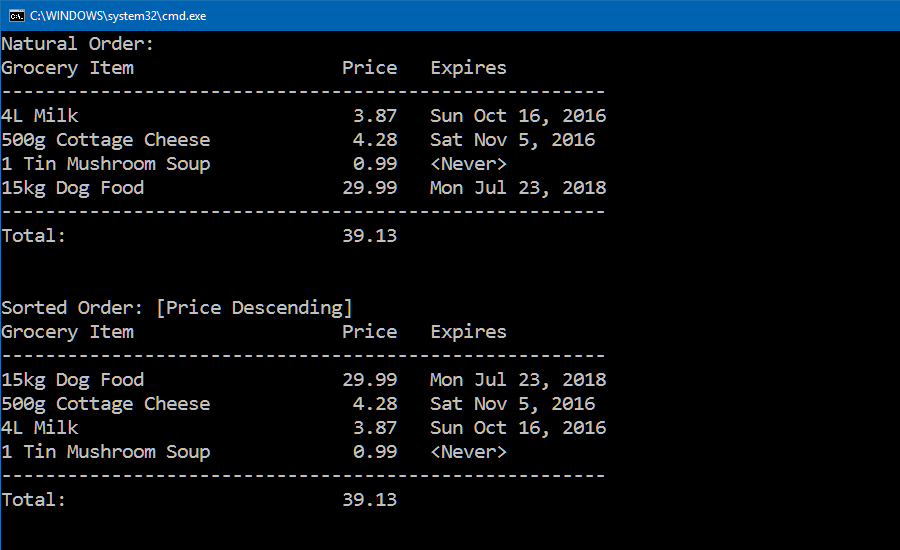

COMP2614 Midterm Exam Project Instructions (30 marks)
For this Midterm exam you may use:
- lecture notes and examples
- your own notes, labs, and assignments
- any textbook(s)
- the Internet
You may not use:
- any form of communication with anyone else (except your instructor)
- others' notes, labs, assignments, or other work
Screen Shot Sample

Requirements
To receive full marks you must follow these requirements:
- Name your project COMP2614Midterm
- Define a class named GroceryItem in a separate source file
- Implement the following public property methods in class GroceryItem: (use appropriate datatypes)
Description (read-only)
Price (read-write)
ExpirationDate (read-only)
Include the necessary code to support sorting by Price descending
Declare class GroceryItem's ExpirationDate as a DateTime type
- Define a class named GroceryItemCollection (derived from List<GroceryItem>) in a separate source file
- Implement the following calculated property method in class GroceryItemCollection:
TotalPrice
- Create the four GroceryItem objects that you see listed in the screenshot above and add them to the GroceryItemCollection when the program begins
Hint: To specify a DateTime value, use its constructor
DateTime dateValue = new DateTime(2016, 10, 16);
Hint: To specify a "Never" date, you can use DateTime.MaxValue as a special value, or use your own technique
- Display a summary in natural and sorted order like the screenshot above by iterating through the populated collection. Use composite strings to format the output. Place your output code in a static method in a dedicated output class. For full marks, make your output look exactly like the screenshot
Feel free to write any other methods that help you get the job done, though this is not required.
Submitting Your Finished Project
- Zip up your entire project
- Submit your zipped file to Midterm Exam in the D2L Dropbox